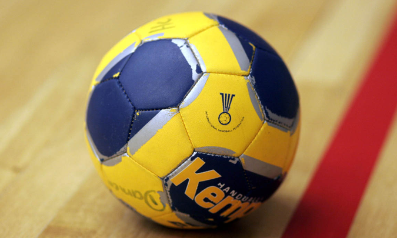

Resin Less
L’objectif principal est de trouver une solution permettant d’éliminer efficacement la résine des ballons de handball tout en réduisant le temps et les efforts nécessaires à cette opération
Projets

L’objectif principal est de trouver une solution permettant d’éliminer efficacement la résine des ballons de handball tout en réduisant le temps et les efforts nécessaires à cette opération
Courte description du projet